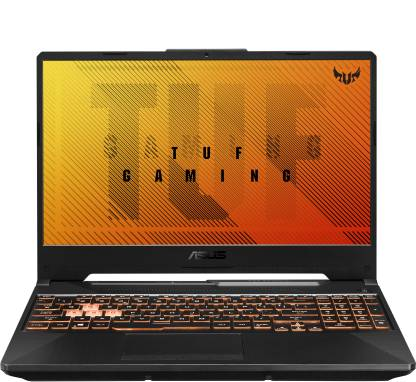
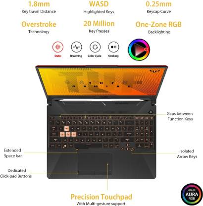
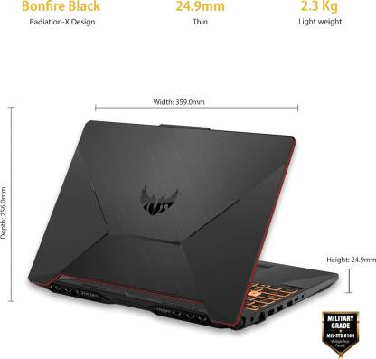

ASUS TUF Gaming F15 Core i5 10th Gen - (8 GB/512 GB SSD/Windows 10 Home/4 GB Graphics/NVIDIA GeForce GTX 1650 Ti/144 Hz)



₹66,000/-
Extra ₹12000/- off
HIGHLIGHTS
- NVIDIA GeForce GTX 1650 Ti
15.6 inch Full HD LED Backlit Anti-glare Display (16:9 Aspect Ratio, 45% NTSC Color Gamut, 200 nits Brightness, 78% Screen-to-body Ratio)
Pre-installed Genuine Windows 10 OS
Preloaded with MS Office
Light Laptop without Optical Disk Drive
SPECIFICATION
- Dedicated Graphic Memory Type:
GDDR6
Dedicated Graphic Memory Capacity:
4 GB
Processor Brand:
Intel
Processor Name:
Core i5
Processor Generation:
10th Gen
SSD:
Yes
SSD Capacity:
512 GB
RAM:
8 GB
RAM Type:
DDR4
Processor Variant:
10300H
Chipset:
Mobile Intel HM470 Express Chipsets
Clock Speed:
2.5 GHz to max turbo frequency at 4.5 Ghz
Memory Slots:
2
RAM Frequency:
2933 MHz
Cache:
8
Graphic Processor:
NVIDIA GeForce GTX 1650 Ti
Number of Cores:
4
OS Architecture:
64 bit
Operating System:
Windows 10 Home
System Architecture:
64
Port And Slot Features:
Mic In:
Yes
USB Port:
1x USB 2.0 Type-A, 2x USB 3.2 (Gen 1) Type-A, 1x Type C USB 3.2 (Gen 2) with Display Port and G-Sync
HDMI Port:
1x HDMI (v2.0b)
Hardware Interface:
PCIe NVMe M.2
Warranty:-
1 Year Onsite Warranty
Warranty Service Type:
Covered in Warranty
Manufacturing Defects
Not Covered in Warranty
Physical Damage
Domestic Warranty
1 Year